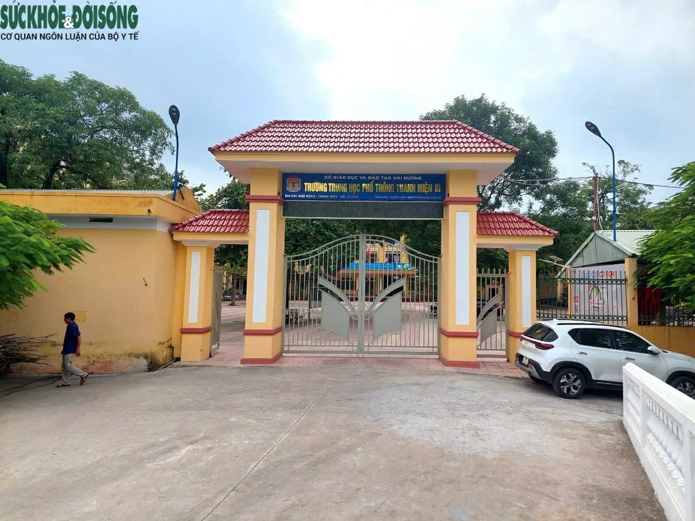
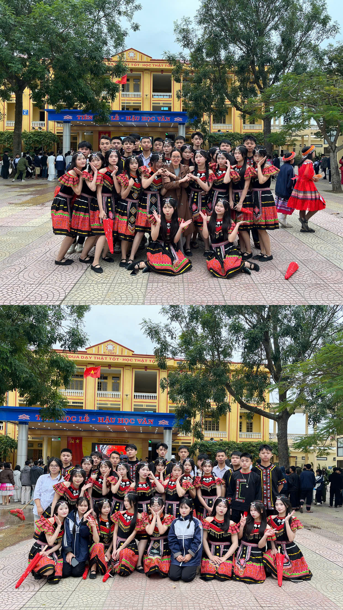
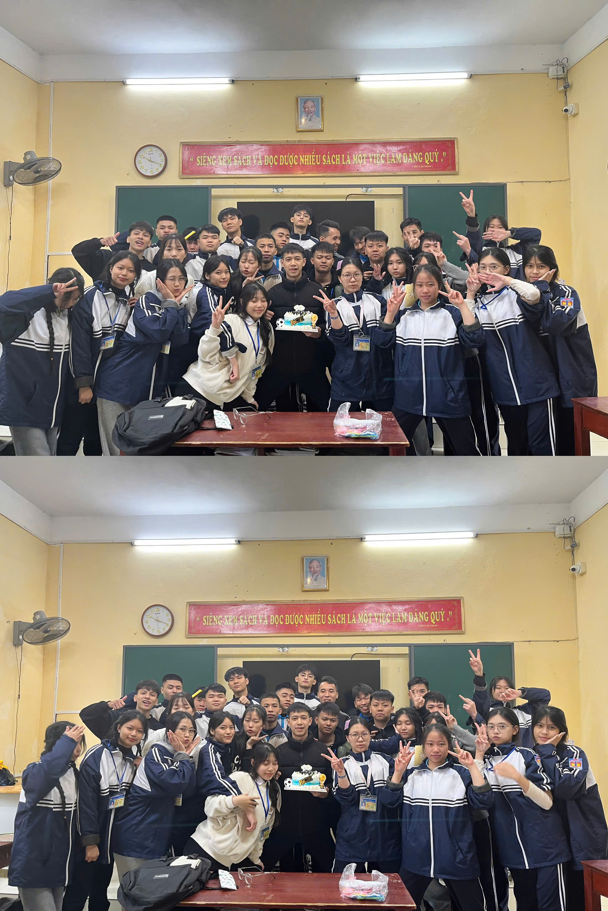
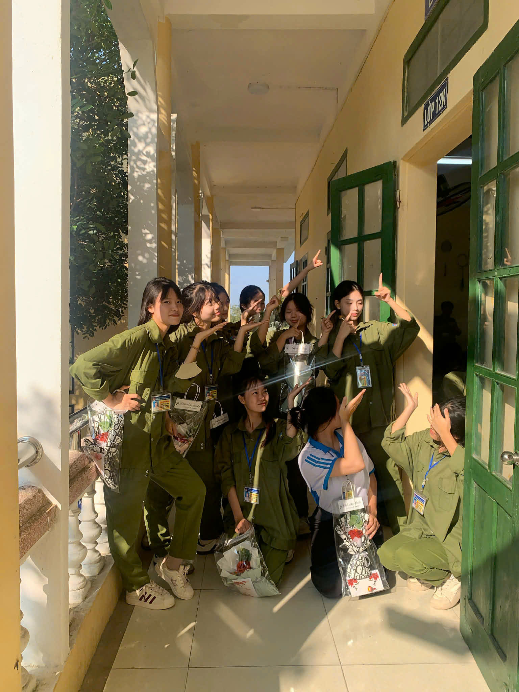
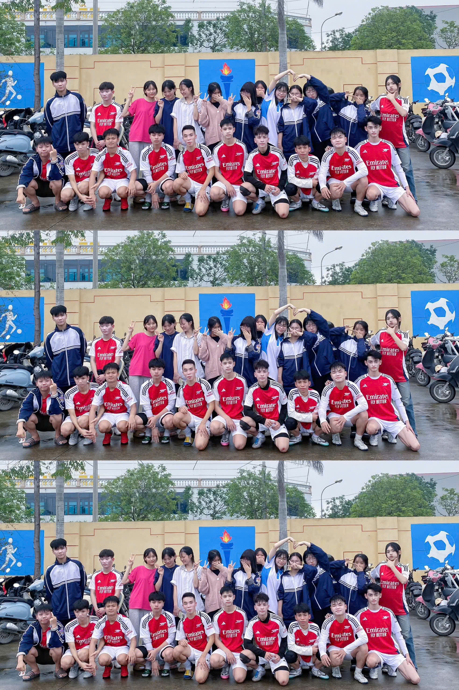
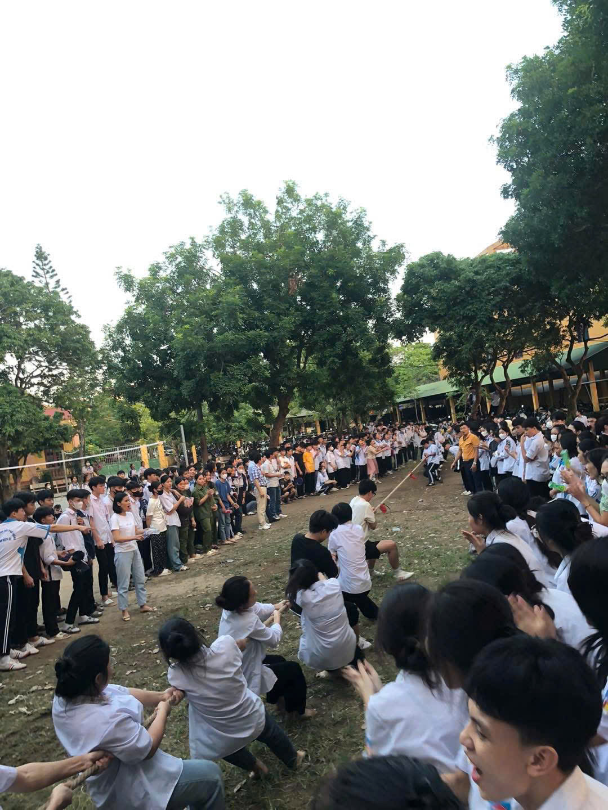

Tuổi học trò là quãng thời gian đẹp nhất trong cuộc đời mỗi người. Ở đó có những buổi học đầy ắp tiếng cười, có những lần lo lắng trước kỳ kiểm tra, có tình bạn trong veo và cả những kỷ niệm sẽ theo ta mãi về sau.
Báo tường “Bộ Chân Lớp – Dấu Ấn Thanh Xuân” là nơi chúng mình cùng nhìn lại chặng đường đã đi qua, lưu giữ những khoảnh khắc đáng nhớ của tập thể lớp … – một tập thể đoàn kết, năng động và đầy nhiệt huyết.
Hy vọng rằng khi mở từng trang báo, mỗi bạn sẽ thấy một phần thanh xuân của chính mình trong đó 💚

Ngày 26/3 là ngày thành lập Đoàn Thanh niên Cộng sản Hồ Chí Minh – tổ chức
chính trị – xã hội của thanh niên Việt Nam. Đây là dịp để tuổi trẻ trường
THPT Thanh Miện III ôn lại truyền thống vẻ vang, phát huy tinh thần xung kích,
sáng tạo và trách nhiệm với quê hương, đất nước.
📸 Câu chuyện của lớp
Lớp 12K không chỉ là nơi học tập mà còn là một gia đình nhỏ. Chúng mình đến từ những cá tính khác nhau, nhưng đã cùng nhau tạo nên một tập thể gắn bó.
Từ những ngày đầu còn bỡ ngỡ, rụt rè, đến khi thân quen, thấu hiểu nhau hơn, cả lớp đã cùng trải qua biết bao kỷ niệm: những tiết học sôi nổi, những giờ sinh hoạt đầy tiếng cười, những lần cùng nhau cố gắng vì thành tích chung.
Dù sau này mỗi người sẽ đi một con đường khác nhau, nhưng quãng thời gian dưới mái trường này chắc chắn sẽ luôn là ký ức đẹp trong tim mỗi chúng ta.


📸 Gương mặt tiêu
Trong tập thể lớp 12K, có rất nhiều bạn học sinh tiêu biểu không chỉ học giỏi mà còn tích cực trong các hoạt động phong trào.Ví dụ như Lan,Ngọc Anh, Thanh Hương,Nguyễn Ngân và còn rất nhiều các gương mặt tiêu biểu khác.
Đó là những bạn luôn nỗ lực trong học tập, sẵn sàng giúp đỡ bạn bè khi gặp khó khăn; là những gương mặt năng nổ trong văn nghệ, thể thao, hoạt động Đoàn – Hội; là những cá nhân thầm lặng nhưng luôn góp phần xây dựng lớp ngày càng vững mạnh.
Chính những con người ấy đã tạo nên “bộ chân” vững chắc để lớp … cùng nhau tiến lên.

Cảm xúc về ngày 26/3
26/3 – Ngày Đoàn viên:
Dưới sự dẫn dắt của Đoàn trường, những hoạt động sôi nổi và các phong trào ý nghĩa được tổ chức đã tạo nên sân chơi lành mạnh, bổ ích cho học sinh. Qua đó, chúng em không chỉ được rèn luyện kỹ năng, tinh thần trách nhiệm mà còn thêm đoàn kết, trưởng thành và tự tin hơn trong học tập cũng như trong các hoạt động tập thể.


Video 26/3 THPT Thanh Miện 3
✍️ Lời cảm ơn
Nhân dịp kỷ niệm Ngày thành lập Đoàn Thanh niên Cộng sản Hồ Chí Minh (26/3), tập thể lớp … xin gửi lời cảm ơn chân thành đến Đoàn trường đã luôn quan tâm, tổ chức nhiều hoạt động ý nghĩa, tạo điều kiện để học sinh được rèn luyện, cống hiến và phát huy tinh thần xung kích của tuổi trẻ.
Chúng em cũng xin bày tỏ lòng biết ơn tới Ban Giám hiệu nhà trường, các thầy cô giáo và đặc biệt là cô giáo chủ nhiệm Vũ Thị Thuỷ đã luôn đồng hành, động viên và hỗ trợ chúng em trong suốt quá trình tham gia các phong trào Đoàn – Hội.
Những hoạt động sôi nổi nhân ngày 26/3 không chỉ để lại nhiều kỷ niệm đẹp mà còn giúp chúng em thêm đoàn kết, tự tin và trưởng thành hơn trên hành trình học tập và rèn luyện dưới mái trường thân yêu.